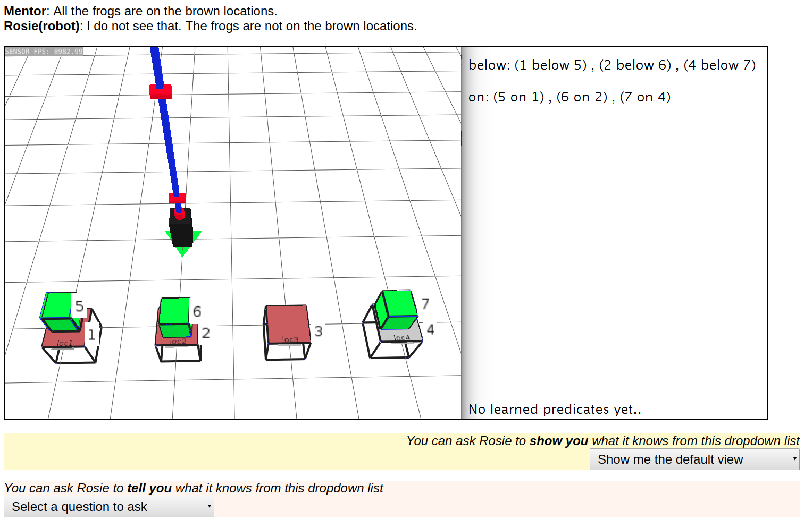

This study is being conducted by the University of Michigan Soar Lab and has been declared IRB-Exempt (HUM00151776)
We are studying ways to improve human-robot interaction. Here, we want to specifically learn what kind of information is useful for the human user to understand the robot better!
If you took part in the Rosie-Visualization Study HIT in August/September 2018, please do not retake this HIT.
You will be provided with 12 situations where an instructor is trying to teach the robot Rosie a game concept, but Rosie cannot detect it. Depending on the example, you will be provided with question-answering and/or display mechanisms through which you can query the robot's knowledge.
Your goal is to identify why the robot is unable to detect the task concept in its environment. This task will take maximum 30 minutes, each example should not take more than 1-2 minutes each. You will be asked to select the answer as to why the robot failed. You will have two tries to get the right answer.
Irrespective of whether you get the answer right or wrong, you will be paid 50 cents for doing the tutorial. If you do pass the tutorial, you will be taken to the actual HIT.
On completing the final HIT, you will answer a post-experiment survey about your experience, following which you will receive a bonus of $4.50 for the task. This will be approved within 2-3 days of submission.
Please reach out to soar-mturk@umich.edu if you have any questions!